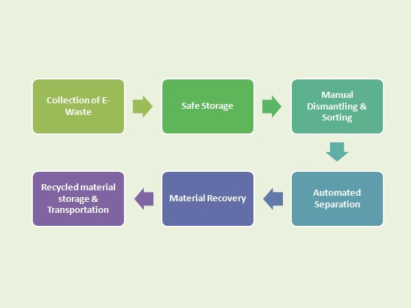
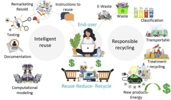

Electronic waste, often known as e-waste, is when any electronic equipment becomes unsuitable for its
intended purpose or passes its expiry date. Because of quick technical breakthroughs and the
manufacturing of new electronic equipment are now taking place of older versions of the equipment. It
has resulted in exponential growth of e-waste, notably in India. People tend to upgrade to newer models
and cutting-edge technology, and product lifespans shorten with time. This calls for urgent need for
e-waste management in India.

E-waste recycling is an activity of the informal sector in India. Thousands of impoverished families
make a living by scavenging stuff from garbage dumps. Common recycling procedures for middle-class urban
families, notably for waste paper, plastic, clothes, or metal, are to sell to small-scale, informal
sector purchasers known as ‘kabadiwalas,’ who then sort and sell it as an input material to artisanal or
for industrial use.
In India, e-waste management follows a similar approach. Thousands of urban families are employed in an
informal e-waste recycling industry to collect, classify, repair, refurbish, and disassemble outdated
electronic equipment. However, in developed nations, the situation is different, and there is no idea in
India of customers willingly giving obsolete electrical and electronic equipment at formal e-waste
disposal sites. Similarly, there is no idea of customers paying for the disposal of e-waste that they
create.
How can we Create Robust E-waste Management in India?
We are always assessing the efficacy of e-waste management. There could be a few measures for
consideration to move forward.

Strengthen the Informal Sector
Policy Instruments under EPR
Regulatory Enforcement
Public Awareness for E-waste Management
The management of e-waste in India is a major concern for governments in many developing nations. It is
rapidly becoming a public health concern, with the number of cases growing at an alarming rate. E-waste
must be collected separately, appropriately processed, and disposed off. It is also an alternative to
traditional landfills and open burning. It is critical to combine the informal and formal sectors.
Competent authorities in developing nations such as India must build processes for securely and
sustainably processing and disposing of e-waste.